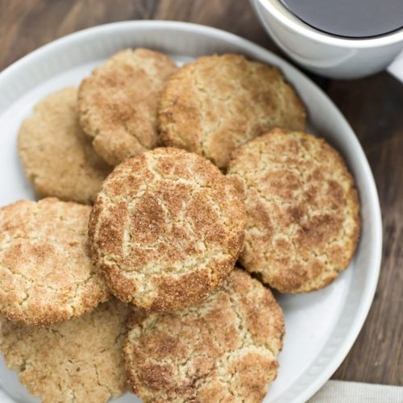

Snickerdoodles
\

Sometimes you just have a hankering for a cookie, we've all been there. But sometimes
you just get discouraged because of all the steps and ingredients required to make them,
or maybe you just fear having to lift up a heavy ass stand mixer. Then when you think of
all the clean up required it just doesn't feel worth it. Unfortunately for your strict diet
we've got the solution to all your problems: this perfect snickerdoodle recipe using just a
single bowl and 10 minutes of prep.
What We Will Need
Ingredients for cookies
- 1/2 C vegan butter, softened
- 1/2 C sugar
- 1/4 C brown sugar or maple syrup
- 2 tbsp plant milk
- 2 tsp vanilla extract
- 1 1/2 C flour
- 1 tsp cinnamon
- 1 1/2 tsp baking powder
- 1/4 tsp salt
Ingredients for cinnamon coating
- 1/8 C sugar
- 1 tsp cinnamon
Time to Cook!
Directions
- Preheat the oven to 375 degrees F and line a baking sheet with parchment paper.
- Use a mixer to mix the butter, sugar and brown sugar together until it’s light and
fluffy. Add plant milk and vanilla and mix again.
- Add the dry ingredients and stir.
- Roll the dough into balls and coat in the cinnamon-sugar mix before putting on
baking sheet.
- Bake for 12 minutes.